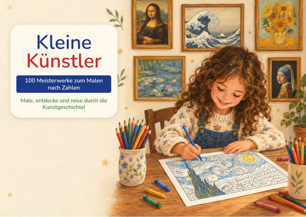

Dein Malbuch
Kleine Künstler – 100 Meisterwerke zum Malen nach Zahlen
100 Meisterwerke von 60 großen Künstlern zum Malen nach Zahlen, mit der Geschichte zu jedem Werk.
Deine Boni
Bonus 1
Erste Schritte – 7 Tage als kleiner Meister
7 Tage, jeden Tag ein Meisterwerk und eine kleine Mission: schauen, ausmalen, erzählen.
Bonus 2
Detailjagd – 30 Missionen im Museum
30 Beobachtungsmissionen, um Farben, Formen und versteckte Details in den Gemälden zu entdecken.
Bonus 3
Meine erste Ausstellung – das komplette Set
Beschriftungsschilder, Einladungen, Plakat, Besucherpässe, Gästebuch und Urkunde für die Ausstellung zu Hause.
So fängst du an
- Öffne das Malbuch, such dir eines der 100 Meisterwerke aus und drucke das Blatt auf A4-Papier in Originalgröße aus.
- Schaut euch das Originalgemälde an, lest die spannenden Infos und malt das Bild nach dem Farbschlüssel aus.
- Danach geht es weiter mit dem 7-Tage-Programm aus dem Bonus „Erste Schritte“ und den 30 Missionen aus dem Bonus „Detailjagd“.
- Wenn ein paar Bilder fertig sind, veranstaltet eure eigene Ausstellung mit dem Set „Meine erste Ausstellung“.
Nächster Schritt
Drucke noch heute ein Blatt aus, das deinem Kind gefällt, und malt es gemeinsam aus. Sobald das erste Bild fertig ist, startet ihr mit Tag 1 von „Erste Schritte“.
Für den privaten Gebrauch, in der Familie oder in der Schulklasse. Weiterverkauf und Weitergabe sind nicht erlaubt.